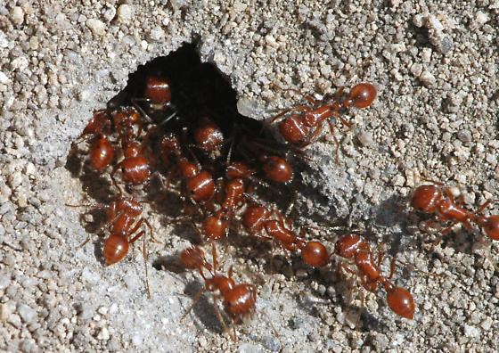
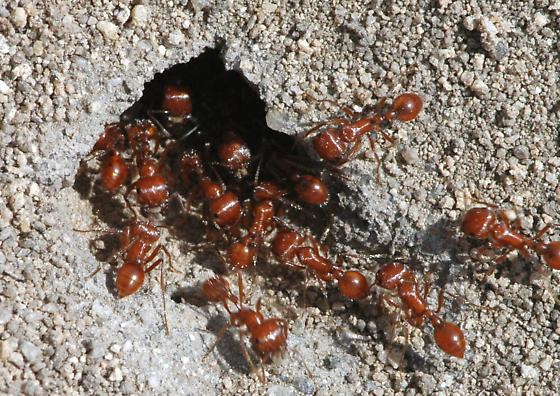

Helms/Helms Cahan Research Laboratory
Marsh Life Science, University of Vermont
Welcome to the Helms-Cahan laboratory website!
  In our lab, we investigate the origins, evolution, and mechanisms underlying social behaviors in the social Hymenoptera (ants, bees and wasps). This group displays a surprising array of social structures, from simple, temporary groups to large, perennial colonies with complex morphological and behavioral specialization. Our research integrates field ecology with molecular tools, which allow us to reconstruct historical patterns and processes as well as to link individual and colony phenotypes to the genes and molecular pathways that underlie their expression. While we make extensive use of modern techniques from fields such as molecular genetics, genomics, phylogeography, and geographic information systems, our research is grounded in the importance of understanding the natural history of species in their environment.
 In our lab, we investigate the origins, evolution, and mechanisms underlying social behaviors in the social Hymenoptera (ants, bees and wasps). This group displays a surprising array of social structures, from simple, temporary groups to large, perennial colonies with complex morphological and behavioral specialization. Our research integrates field ecology with molecular tools, which allow us to reconstruct historical patterns and processes as well as to link individual and colony phenotypes to the genes and molecular pathways that underlie their expression. While we make extensive use of modern techniques from fields such as molecular genetics, genomics, phylogeography, and geographic information systems, our research is grounded in the importance of understanding the natural history of species in their environment.
Current Research Projects
A few of the ongoing projects in the lab - please see individual pages for post-docs, graduate students and undergraduates to find out about what other exciting things people are up to.
New project: Epigenetic Mechanisms and Evolution of Thermal Plasticity in Drosophila This NSF/EPSCoR funded project is a collaborative effort among four institutions in three EPSCoR jurisdictions: Vermont (S. Helms Cahan, B. Lockwood and S. Fritze), Rhode Island (J. Waters, H. Axen) and Kentucky (N. Teets). We will be using the insect model system Drosophila melanogaster to investigate how insects adaptively adjust their upper and lower thermal limits in response to thermal stressors experienced across development, during the adult stage, and following acute temperature shock. All of these responses require a mechanism for sensing of the thermal environment that leads to systematic, often long-lasting changes in gene expression to cope with future thermal conditions. In this project, we will characterize and experimentally test the role of epigenetic mechanisms, including chromatin modification, miRNA and lncRNA, in driving the thermal acclimation response. We will link these molecular mechanisms to the evolution of thermal plasticity both at the species level, though GWAS and experimental evolution experiments, and across the genus Drosophila as clades colonized and adapted to diverse thermal environments in North and Central America. NOTE: we are actively recruiting MS and PhD students to join this project! There are lots of opportunities to pursue projects that span levels of organization, from cell biology to bioinformatics to physiology to phylogeography.
Acclimation and Adaptation to Climatic Warming in Northeast Temperate Forest Ant Communities This collaborative project with Dr. Nicholas Gotelli and Bryan Ballif at UVM, along with Aaron Ellison at Harvard Forest, Rob Dunn at North Carolina State University and Nathan Sanders at the University of Tennessee Knoxville, is funded by a Dimensions of Biodiversity grant from the National Science Foundation. We are looking at how ant communities respond to temperature increases such as those projected to occur in the northeast US over the coming 50-100 years. How species deal with climatic change is expected to critically depend on their inherent tolerance to temperature extremes, local genetically-based variation in temperature tolerance traits, and the potential for movement of better adapted alleles from more southern populations northward as habitats shift northward. We are using both targeted-gene approaches and next-generation transcriptome sequencing (RNA-seq) to characterize short and long-term responses to increased temperatures in a common north temperate forest ant ant, Aphaenogaster rudis, and test whether latitudinal range breadth acts as a genetic reservoir for thermal resiliency in the face of climate shifts.
Community Genomics of Chagas Disease: Leveraging the Power of High-throughput Reduced-representation Libraries to Investigate Population Dynamics and Species Interactions of the Chagas Disease Vector, Triatoma dimidiata Another NSF-funded collaborative project with Drs. Lori Stevens and Donna Rizzo at UVM, Patricia Dorn (Loyola Univ.), and Carlota Monroy (San Carlos Univ., Guatemala). Chagas Diease is a protozoan parasitic disease occurring across Central and South America, with an estimated 70 million people at risk of exposure to the potentially fatal disease. The parasite, Trypanosoma cruzi, is vectored by blood-feeding Triatomine kissing bugs, including the native vector Triatoma dimidiata in Central and northern South America. Effective management requires understanding patterns of movement, life history and infection dynamics of the insect, as well as the interactions between the parasite and co-occurring microbes in the insect gut. We have developed a bioinformatics pipeline to extract genetic data on the vector, parasite, vertebrate bloodmeals and gut microbiome from individual abdomen samples using Genotyping-by-Sequencing or RADseq sequencing. We are applying this methodology to investigate a diverse set of questions, including vector dispersal and recovery following household insecticide application; prevalence, strain identification and diversification of T. cruzi; vertebrate host breadth of the vector across regions in Central America; and shifts in microbial community composition in the insect gut associated with T. cruzi infection.
Genomic Analysis of Hybridization and Caste Differentiation in Pogonomyrmex harvester ants A defining feature of social insects such as ants, bees, and wasps is differentiation of individuals into specific castes, yet little is known about the types and number of genes responsible for initiating divergent developmental pathways. Although in virtually all eusocial species it is the environment, rather than genetic predisposition, that determines who develops into a queen, several populations of harvester ants use a genetically-based mechanism for determining reproductive caste. Non-hybrid offspring are genetically unable to develop into workers, presumably due to homozygosity at one or more caste loci. This offers a unique opportunity to use standard genetic mapping techniques to identify genes responsible for initiating alternate caste phenotypes. We are using genomic methods to identify Single Nucleotide Polymorphism (SNP) markers across the genome, with which we are mapping genes responsible for reproductive potential. We are also using these markers to reconstruct the evolutionary history of hybridization in this group of ants, and test competing hypotheses for how caste mechanisms evolve. In addition to mechanistic questions, we have an ongoing interest in understanding the ecological and evolutionary context in which genetic caste determining systems evolve and are maintained.
The Evolution of Cooperation and Cooperative Breeding in Ant Queens Why unrelated individuals should cooperate remains a significant puzzle in evolutionary biology. An important problem in determining its evolutionary causes is that cooperation in extant taxa evolved in the distant past under unknown ecological conditions. However, intraspecific geographic variation in queen breeding systems in the ant Messor pergandei provides a powerful system for empirical tests of why cooperation and cooperative breeding evolve. In this common and widely distributed ant of the Mojave and Sonoran Deserts of North America there are three distinctly different breeding systems distributed in different geographic regions: one where queens establish a new colony alone, a second where queens establish a new colony in groups, but later fight until one survives, and a third where queens form groups, do not fight, and persist long-term to breed cooperatively. Our recent studies have determined how different social systems are distributed across the species’ range and comparative studies have tested how natural selection has acted to result in different phenotypes. Moreover, because M. pergandei has a single contiguous geographic range, different social systems are in direct contact across the desert landscape. Contemporary and ongoing evolution across contact zones allows for direct tests of which environments favor one social form over another.